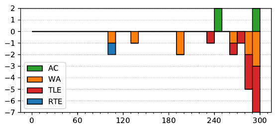

ACM ICPC World Finals 2019
Solved by 4 teams.
First solved after 243 minutes.
Shortest team solution: 1971 bytes.
Shortest judge solution: 961 bytes.

This was one of the hardest problems in the set, and it has a very nice solution based on an approach that could ostensibly be called “divide and conquer” or “meet in the middle”.
First, it is easy to see that the system of traffic lights is periodic, with some period P = lcm( p1 , . . . , pn ), where pi = ri + gi is the period of the ith traffic light. So there is a naïve solution to the problem in time Ω(nP) by checking for each time t ∈ {0, . . . , P − 1} what would happen to a car arriving at time t. But P can be as large as lcm(1, . . . , 100) ≈ 1040 so this has no chance of running in time.
Next, if all pairs of periods pi and p j were relatively prime then the problem would be easier, because now the probabilities that a car passes light i and light j are independent (this follows from the Chinese Remainder Theorem), so in order to compute the probability that a car passes some set of lights we just have to multiply the probabilities of passing the individual lights, and we could solve the problem in O(n) time. Extending this slightly, if some pairs of lights have the same period pi = p j rather than being relatively prime, then we can also solve the problem rather easily, say in O(np) time (where p ≤ 100 is the maximum period length of any individual light) by, for each period, keeping track of which times modulo that period would result in having stopped at a red light. As yet another small extension of this idea, if the periods of some pairs of lights are divisible by each other, the same solution applies (e.g. if one light is green at times 2–3 modulo 5, and another is green at times 7–11 modulo 15, we can think of the first one as instead being a light which is green at times 2–3, 7–8, and 12–13 modulo 15 so that both have the same period).
These small observations let us deal with some situations but in general the periods will have some shared common factors that will mess things up (e.g. if p1 = 64 and p2 = 92 then gcd( p1 , p2 ) = 4 and the periods are clearly not divisible by each other).
We now get to the key idea of the solution. Let us pick some number X and for each time t ∈ {0, . . . , X − 1} compute the answer for cars arriving at time t modulo X, that is, times t, t + X, t + 2X, etc. When restricted to these times, a traffic light with period pi will still behave in a periodic way, but with period pi / gcd( X, pi ). These “reduced periods” are in general smaller than the original periods, and the hope is that maybe they are sufficiently reduced that the small common factors are eliminated and the “all periods relatively prime or divisible by each others” solution from above can be applied. So how large do we need to make X? A sufficient condition for all the reduced periods being relatively prime or divisible by each other is that they are all prime powers, so we can choose the smallest X with the property that p/ gcd( p, X ) is a prime power for all 1 ≤ p ≤ 100. It turns out that the smallest such X is quite small, namely X = 23 · 32 · 5 · 7 = 2520 (which can be figured out by some pen and paper work, or in an engineering way by writing a small program to try all X).
All in all, this leads to an O( X · n · p) time algorithm, which for X ≤ 2520, n ≤ 500, and p ≤ 100 is reasonably fast. The judges considered increasing the limit of p up to 200, because while growing exponentially in p, the value of X at that point is still only 27720 (you need to add in a factor 11 from the previous bound). But we decided that this problem was hard enough as it is, and that it was probably more approachable with the bound of 100.